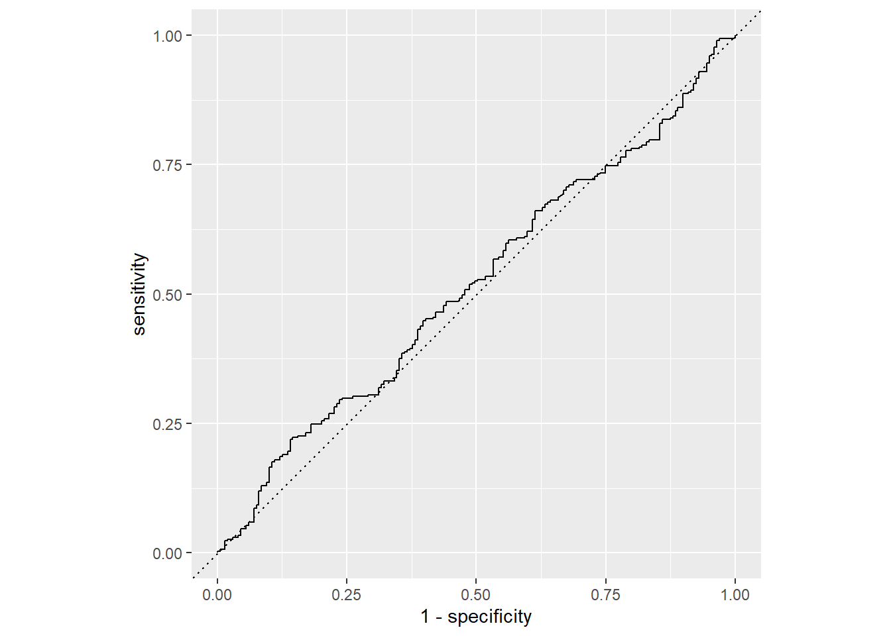
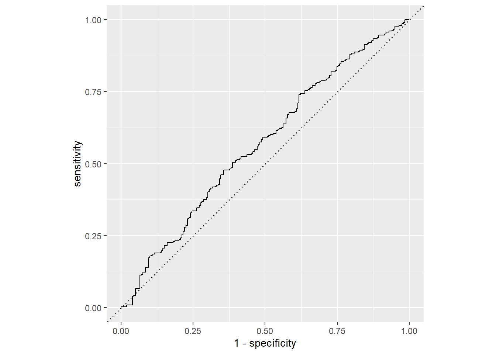
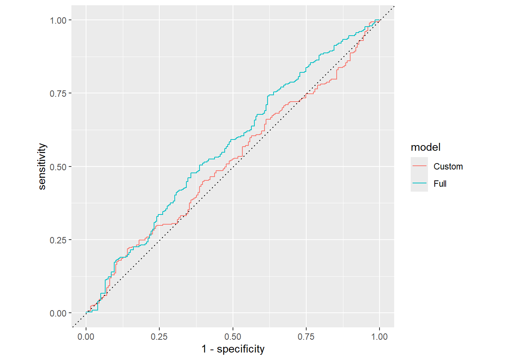

library(tidyverse)
library(tidymodels)AE 12: Chicago taxi classification
Suggested answers
Application exercise
Answers
Important
These are suggested answers. This document should be used as reference only, it’s not designed to be an exhaustive key.
In this application exercise, we will
- Split our data into testing and training
- Fit logistic regression models to testing data to classify outcomes
- Evaluate performance of models on testing data
We will use tidyverse and tidymodels for data exploration and modeling,
and the chicago_taxi dataset introduced in the lecture.
chicago_taxi <- read_csv("data/chicago-taxi.csv") |>
mutate(
tip = fct_relevel(tip, "no", "yes"),
local = fct_relevel(local, "no", "yes"),
dow = fct_relevel(dow, "Mon", "Tue", "Wed", "Thu", "Fri", "Sat", "Sun"),
month = fct_relevel(month, "Jan", "Feb", "Mar", "Apr")
)Rows: 2000 Columns: 7
── Column specification ────────────────────────────────────────────────────────
Delimiter: ","
chr (5): tip, company, local, dow, month
dbl (2): distance, hour
ℹ Use `spec()` to retrieve the full column specification for this data.
ℹ Specify the column types or set `show_col_types = FALSE` to quiet this message.Remember from the lecture that the chicago_taxi dataset contains information on whether a trip resulted in a tip (yes) or not (no) as well as numerical and categorical features of the trip.
glimpse(chicago_taxi)Rows: 2,000
Columns: 7
$ tip <fct> no, no, no, no, no, no, no, no, no, no, no, no, no, no, no, n…
$ distance <dbl> 0.40, 0.96, 1.07, 1.13, 10.81, 3.60, 1.08, 0.85, 17.92, 0.00,…
$ company <chr> "other", "Taxicab Insurance Agency Llc", "Sun Taxi", "other",…
$ local <fct> yes, no, no, no, no, no, yes, no, no, yes, yes, no, no, no, n…
$ dow <fct> Fri, Mon, Fri, Sat, Sat, Wed, Wed, Tue, Tue, Sun, Fri, Fri, F…
$ month <fct> Mar, Apr, Feb, Feb, Apr, Mar, Mar, Mar, Jan, Apr, Apr, Feb, M…
$ hour <dbl> 17, 8, 15, 14, 14, 12, 13, 8, 20, 16, 20, 8, 15, 15, 12, 0, 1…Spending your data
Split your data into testing and training in a reproducible manner and display the split object.
set.seed(1234)
chicago_taxi_split <- initial_split(chicago_taxi)
chicago_taxi_split<Training/Testing/Total>
<1500/500/2000>What percent of the original chicago_taxi data is allocated to training and what percent to testing?
# training percentage
1500 / 2000[1] 0.75# testing percentage
500 / 2000[1] 0.2575% of the data is allocated to training and the remaining 25% to testing. This is because the prop argument in initial_split() is 3/4 by default. How would the code need to be updated to allocate 80% of the data to training and the remaining 20% to testing?
# split 80-20
set.seed(123456)
initial_split(chicago_taxi, prop = 0.8)<Training/Testing/Total>
<1600/400/2000>Let’s stick with the default split and save our testing and training data.
chicago_taxi_train <- training(chicago_taxi_split)
chicago_taxi_test <- testing(chicago_taxi_split)Model 1: Custom choice of predictors
Fit
Fit a model for classifying trips as tipped or not based on a subset of predictors of your choice. Name the model chicago_taxi_custom_fit and display a tidy output of the model.
chicago_taxi_custom_fit <- logistic_reg() |>
fit(
tip ~ hour + distance + local + dow,
data = chicago_taxi_train
)
tidy(chicago_taxi_custom_fit)# A tibble: 10 × 5
term estimate std.error statistic p.value
<chr> <dbl> <dbl> <dbl> <dbl>
1 (Intercept) -0.0380 0.239 -0.159 0.874
2 hour 0.00505 0.0128 0.395 0.693
3 distance 0.0343 0.00872 3.93 0.0000848
4 localyes -0.336 0.136 -2.47 0.0134
5 dowTue 0.210 0.197 1.07 0.286
6 dowWed 0.380 0.199 1.91 0.0563
7 dowThu 0.284 0.195 1.46 0.144
8 dowFri 0.380 0.194 1.95 0.0506
9 dowSat 0.203 0.236 0.862 0.388
10 dowSun 0.638 0.246 2.59 0.00963 Predict
Predict for the testing data using this model. Store the resulting augmented data frame as chicago_taxi_custom_aug.
chicago_taxi_custom_aug <- augment(
chicago_taxi_custom_fit,
new_data = chicago_taxi_test
)
chicago_taxi_custom_aug# A tibble: 500 × 10
.pred_class .pred_no .pred_yes tip distance company local dow month hour
<fct> <dbl> <dbl> <fct> <dbl> <chr> <fct> <fct> <fct> <dbl>
1 yes 0.474 0.526 no 0.4 other yes Fri Mar 17
2 yes 0.388 0.612 no 1.07 Sun Ta… no Fri Feb 15
3 yes 0.353 0.647 no 10.8 Sun Ta… no Sat Apr 14
4 yes 0.473 0.527 no 1.08 Flash … yes Wed Mar 13
5 yes 0.440 0.560 no 0.85 Taxica… no Tue Mar 8
6 yes 0.292 0.708 no 17.9 City S… no Tue Jan 20
7 yes 0.370 0.630 no 4.4 City S… no Fri Feb 8
8 yes 0.340 0.660 no 10 Taxi A… no Thu Apr 15
9 yes 0.467 0.533 no 1 other yes Fri Mar 18
10 yes 0.386 0.614 no 6.26 Flash … no Tue Apr 15
# ℹ 490 more rowsEvaluate
Calculate the false positive and false negative rates for the testing data using this model.
chicago_taxi_custom_aug |>
count(.pred_class, tip) |>
arrange(tip) |>
group_by(tip) |>
mutate(
p = round(n / sum(n), 2),
decision = case_when(
.pred_class == "yes" & tip == "yes" ~ "True positive",
.pred_class == "yes" & tip == "no" ~ "False positive",
.pred_class == "no" & tip == "yes" ~ "False negative",
.pred_class == "no" & tip == "no" ~ "True negative"
)
)# A tibble: 4 × 5
# Groups: tip [2]
.pred_class tip n p decision
<fct> <fct> <int> <dbl> <chr>
1 no no 15 0.08 True negative
2 yes no 184 0.92 False positive
3 no yes 28 0.09 False negative
4 yes yes 273 0.91 True positive Another commonly used display of this information is a confusion matrix. Create this using the conf_mat() function.
conf_mat(
chicago_taxi_custom_aug,
truth = tip,
estimate = .pred_class
) Truth
Prediction no yes
no 15 28
yes 184 273Sensitivity, specificity, ROC curve
Calculate sensitivity and specificity and draw the ROC curve.
chicago_taxi_custom_roc <- roc_curve(
chicago_taxi_custom_aug,
truth = tip,
.pred_yes,
event_level = "second"
)
chicago_taxi_custom_roc# A tibble: 492 × 3
.threshold specificity sensitivity
<dbl> <dbl> <dbl>
1 -Inf 0 1
2 0.421 0 1
3 0.425 0 0.997
4 0.427 0.00503 0.993
5 0.428 0.0101 0.993
6 0.430 0.0151 0.993
7 0.431 0.0201 0.993
8 0.432 0.0251 0.993
9 0.432 0.0302 0.993
10 0.435 0.0302 0.990
# ℹ 482 more rowsggplot(chicago_taxi_custom_roc, aes(x = 1 - specificity, y = sensitivity)) +
geom_path() +
geom_abline(lty = 3) +
coord_equal()
Model 2: All predictors
Fit
Fit a model for classifying trips as tipped or not based on all predictors available. Name the model taxi_full_fit and display a tidy output of the model.
chicago_taxi_full_fit <- logistic_reg() |>
fit(tip ~ ., data = chicago_taxi_train)
tidy(chicago_taxi_full_fit)# A tibble: 19 × 5
term estimate std.error statistic p.value
<chr> <dbl> <dbl> <dbl> <dbl>
1 (Intercept) 0.0718 0.337 0.213 0.831
2 distance 0.0321 0.00888 3.62 0.000295
3 companyCity Service -0.0411 0.264 -0.156 0.876
4 companyFlash Cab -0.781 0.261 -2.99 0.00276
5 companyother -0.0866 0.237 -0.365 0.715
6 companySun Taxi 0.0537 0.264 0.204 0.839
7 companyTaxi Affiliation Services -0.291 0.247 -1.18 0.239
8 companyTaxicab Insurance Agency Llc -0.142 0.262 -0.542 0.588
9 localyes -0.348 0.138 -2.53 0.0115
10 dowTue 0.197 0.199 0.992 0.321
11 dowWed 0.361 0.201 1.80 0.0725
12 dowThu 0.256 0.197 1.30 0.193
13 dowFri 0.316 0.197 1.60 0.109
14 dowSat 0.170 0.238 0.715 0.474
15 dowSun 0.570 0.250 2.29 0.0223
16 monthFeb 0.122 0.176 0.694 0.487
17 monthMar 0.145 0.161 0.901 0.368
18 monthApr 0.185 0.162 1.14 0.256
19 hour 0.00485 0.0129 0.375 0.707 Predict
Predict for the testing data using this model. Store the resulting augmented data frame as chicago_taxi_full_aug.
chicago_taxi_full_aug <- augment(
chicago_taxi_full_fit,
new_data = chicago_taxi_test
)
chicago_taxi_full_aug# A tibble: 500 × 10
.pred_class .pred_no .pred_yes tip distance company local dow month hour
<fct> <dbl> <dbl> <fct> <dbl> <chr> <fct> <fct> <fct> <dbl>
1 yes 0.452 0.548 no 0.4 other yes Fri Mar 17
2 yes 0.338 0.662 no 1.07 Sun Ta… no Fri Feb 15
3 yes 0.290 0.710 no 10.8 Sun Ta… no Sat Apr 14
4 no 0.611 0.389 no 1.08 Flash … yes Wed Mar 13
5 yes 0.416 0.584 no 0.85 Taxica… no Tue Mar 8
6 yes 0.289 0.711 no 17.9 City S… no Tue Jan 20
7 yes 0.343 0.657 no 4.4 City S… no Fri Feb 8
8 yes 0.351 0.649 no 10 Taxi A… no Thu Apr 15
9 yes 0.446 0.554 no 1 other yes Fri Mar 18
10 no 0.513 0.487 no 6.26 Flash … no Tue Apr 15
# ℹ 490 more rowsEvaluate
Calculate the false positive and false negative rates for the testing data using this model.
chicago_taxi_full_aug |>
count(.pred_class, tip) |>
arrange(tip) |>
group_by(tip) |>
mutate(
p = round(n / sum(n), 2),
decision = case_when(
.pred_class == "yes" & tip == "yes" ~ "True positive",
.pred_class == "yes" & tip == "no" ~ "False positive",
.pred_class == "no" & tip == "yes" ~ "False negative",
.pred_class == "no" & tip == "no" ~ "True negative"
)
)# A tibble: 4 × 5
# Groups: tip [2]
.pred_class tip n p decision
<fct> <fct> <int> <dbl> <chr>
1 no no 41 0.21 True negative
2 yes no 158 0.79 False positive
3 no yes 37 0.12 False negative
4 yes yes 264 0.88 True positive Sensitivity, specificity, ROC curve
Calculate sensitivity and specificity and draw the ROC curve.
chicago_taxi_full_roc <- roc_curve(
chicago_taxi_full_aug,
truth = tip,
.pred_yes,
event_level = "second"
)
chicago_taxi_full_roc# A tibble: 500 × 3
.threshold specificity sensitivity
<dbl> <dbl> <dbl>
1 -Inf 0 1
2 0.274 0 1
3 0.298 0.00503 1
4 0.311 0.0101 1
5 0.347 0.0151 1
6 0.348 0.0151 0.997
7 0.355 0.0151 0.993
8 0.356 0.0151 0.990
9 0.357 0.0201 0.990
10 0.368 0.0201 0.987
# ℹ 490 more rowsggplot(chicago_taxi_full_roc, aes(x = 1 - specificity, y = sensitivity)) +
geom_path() +
geom_abline(lty = 3) +
coord_equal()
Model 1 vs. Model 2
Plot both ROC curves and articulate how you would use them to compare these models. Also calculate the areas under the two curves.
chicago_taxi_custom_roc <- chicago_taxi_custom_roc |>
mutate(model = "Custom")
chicago_taxi_full_roc <- chicago_taxi_full_roc |>
mutate(model = "Full")
bind_rows(
chicago_taxi_custom_roc,
chicago_taxi_full_roc
) |>
ggplot(aes(x = 1 - specificity, y = sensitivity, color = model)) +
geom_path() +
geom_abline(lty = 3) +
coord_equal()
# Custom model
roc_auc(
chicago_taxi_custom_aug,
truth = tip,
.pred_yes,
event_level = "second"
)# A tibble: 1 × 3
.metric .estimator .estimate
<chr> <chr> <dbl>
1 roc_auc binary 0.517# Full model
roc_auc(
chicago_taxi_full_aug,
truth = tip,
.pred_yes,
event_level = "second"
)# A tibble: 1 × 3
.metric .estimator .estimate
<chr> <chr> <dbl>
1 roc_auc binary 0.568